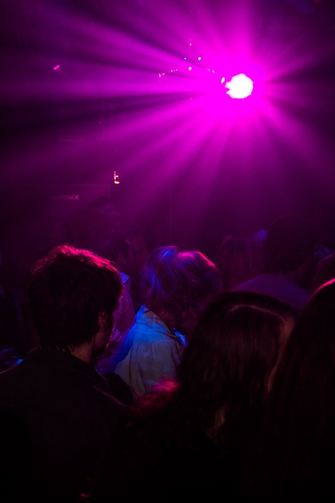
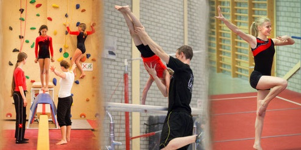
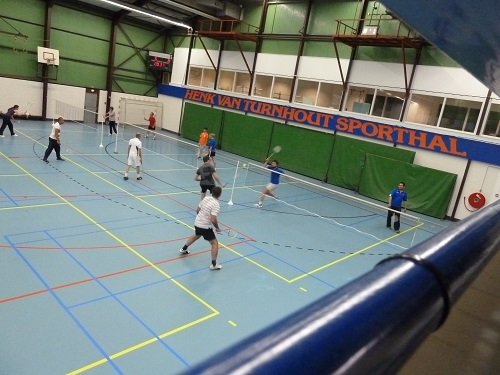
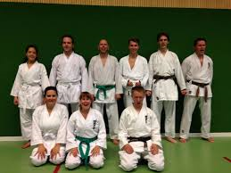
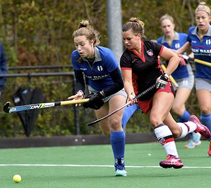
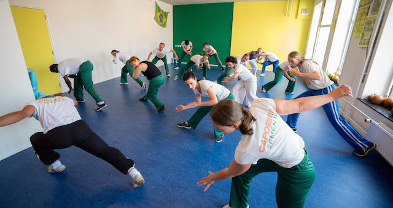
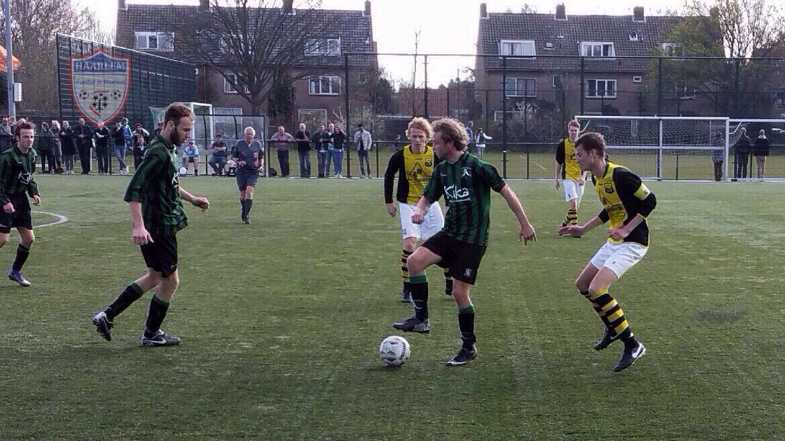
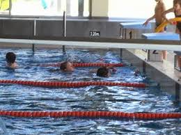
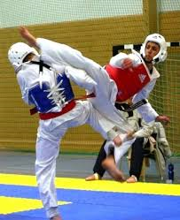

Haarlem
Oude Stad
Bezienswaardigheden in de Oude Stad
Grote Markt
De Grote markt is een erg mooi plein, midden in het centrum van Haarlem, en er is meer te zien op dit stukje van Haarlem dan je zou denken. Er staan hier namelijk een aantal belangrijke onderdelen van de Oude Stad Haarlem. Bijvoorbeeld het standbeeld van Laurens Janszoon Coster, velen zeggen dat dit de uitvinder van de Nederlandse boekdrukkunst is, Andere zeggen weer dat dit de Duitse, Johannes Gutenberg was. op de grote Markt vind je onder andere ook, het Stadhuis, de oude vleeshal en de grote Bavokerk, in het stadhuis staat het beeld van Justitia, dit is het oudste beeld van heel Haarlem. De grote markt is een plek waar veel gezelligheid en hystorie samen komt. veel bijzondere gebeurtenissen zoals het Haarlem Jazz event en Haarlem culinair, vinden plaats op de grote markt in Haarlem. Verder is er elke week een markt met allemaal verschillende kraampjes, winkeltjes, etens tentjes, die na de markt dag allemaal weer weg gehaald worden.
Molens in Haarlem
Er zijn twee heel bekende molens in Haarlem, dit zijn de Adriaan Molen en de Eenhoorn Molen. De Adriaan is in 2001 weer helemaal opgeknapt, maar is al gebouwd in 1779. Rond het jaar 1800, werd de Adriaan gebruikt voor het verwerken van tabak. later is de molen ook nog in gebruik geweest als graan molen. tegenwoordig kan je de Adriaan bezoeken, Het is namelijk veranderd in een muzeum. Met een bezoek aan de Adriaan leer je alles over het gebruik van de molen, de geschiedenis van de molen, en heel veel meer leuke weetjes. de Eenhoorn is gebouwd, dichtbij de tijd dat de Adriaan gebouwd is, namelijk rond 1776. vroeger werd deze molen gebruikt voor het zagen van hout. wat leuk is aan deze molen, is dat hij elke maand één keer in gebruik word genomen, de molen is dan open voor bezoekers.Uitgaan in de Oude Stad
Mudo
-

Bij sportclub HCL kan je terrecht voor turnen, dans, acrogym, circus en voor de volwassenen keepfitlessen en yoga.
-

Sportschool Kenamju is een sportschool waar je zelf lekker aan de gang kunt gaan, of door middel van coaching.Kenamju bied onderandere zwemlessen, fysiotherapie en coaching.
-

Bij de sportclub Olympia Haarlem kan je genieten van (zaal)voedbal, honk- en softbal, en batminton maar ook leuke dingen zoals darten, frisbee en biljarten.
-

Ryounkai is een sportclub die specialiseert in traditionele japanse Karate, Ze houden zich veel bezig met full-contact bogu karate.
-

HBS is een hockey club hier in Haarlem, waar elke dag hard getraint kan worden, en dat gebeurd dus ook!
-

De capoera school Haarlem, is een hele leuke plek om in beweging te komen. er zijn lessen voor kinderen en volwassenen beschikbaar.
-

Bij de Haarlemse Kano Verenigging kan je kiezen uit drie onderdelen, vlakwatervaren, zeevaren en varen met een SUP-board. er zijn ochten, trainingen en andere activiteiten voor al deze onderdelen beschikbaar.
-

SV alliance, een voedbalclub opgerricht op p 25 november 1922, en de meest sportlieve club van heel Haarlem
-

Bij de zwemverenigging de Watervrienden staat het plezier hebben centraal. Zo verzorgt de verenigging óók buiten het zwembad elk jaar een aantal activiteiten, waaronder een zomerkamp!
-

Bij HWA-Rang Dragon kan je keizen tussen Brazilian Jiu Jitsu, Taekwando en Mudo. HWA-Rang geeft mogelijkheid tot een hele persoonlijke aanpak voor het leren van een vechtsport.